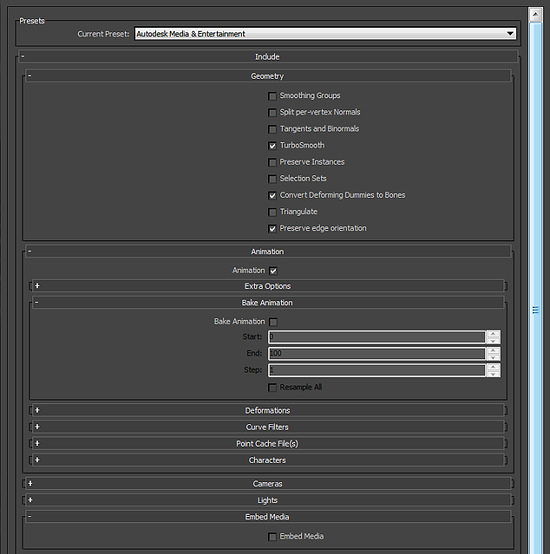
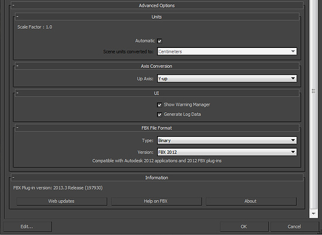

FBX export guide
Unity supports FBX files which can be generated from many popular 3D applications. Use these guidelines to help ensure the most best results.
Select > Prepare > Check Settings > Export > Verify > Import
What do you want to export? - be aware of export scope e.g. meshes, cameras, lights, animation rigs, etc. -
- Applications often let you export selected objects or a whole scene
- Make sure you are exporting only the objects you want to use from your scene by either exporting selected, or removing unwanted data from your scene.
- Good working practice often means keeping a working file with all lights, guides, control rigs etc. but only export the data you need with export selected, an export preset or even a custom scene exporter.
What do you need to include? - prepare your assets:
- Meshes - Remove construction history, Nurbs, Nurms, Subdiv surfaces must be converted to polygons - e.g. triangulate or quadrangulate
- Animation - Select the correct rig, check frame rate, animation length etc.
- Textures - Make sure your textures are sourced already from your Unity project or copied into a folder called \textures in your project
- Smoothing - Check if you want smoothing groups and/or smooth mesh
How do I include those elements? - check the FBX export settings
- Be aware of your settings in the export dialogue so that you know what to expect and can match up the fbx settings In Unity - see figs 1, 2 & 3 below
- Nodes, markers and their transforms can be exporte
- Cameras and Lights are not currently imported in to Unity
Which version of FBX are you using? if in doubt use 2012.2
- Autodesk update their FBX installer regularly and it can provide different results with different versions of their own software and other 3rd party 3D apps.
- See Advanced Options > FBX file format
Will it work? - Verify your export
- Check your file size - do a sanity check on the file size (e.g. >10kb?)
- Re-import your FBX into a new scene in the 3D package you use to generate it - is it what you expected?
Import!
- Import into Unity
- Check FBX import settings in inspector : texures, animations, smoothing, etc.
See below for Maya FBX dialogue example:
Fig 1 General, Geometry & Animation

Fig 2 Lights, Advanced options

Page last updated: 2012-11-16